처음 한 번 — 설치와 이름 입력
모두 · 처음 한 번만 하면 됩니다
- 휴대폰 크롬에서 주소를 엽니다.
bongsuk0708.github.io/minwon/risk - 오른쪽 위 ⋮ → 홈 화면에 추가를 누르면 바탕화면에 앱 아이콘(주황 방패)이 생깁니다.
- 처음 열면 이름 입력 창이 뜹니다. 본인 이름을 적으세요. 신고·서명에 이 이름이 남습니다.
- 이름을 바꾸려면 화면 오른쪽 위 주황색 이름을 누르세요.
인터넷이 연결되어 있어야 저장됩니다. 지하·차고처럼 신호가 약한 곳에서는 밖으로 나와서 저장하세요.
현장 근무자용 — 이 두 가지만 알면 됩니다
① 아차사고·위험요인 신고하기
현장 근무자 누구나 · 다칠 뻔했거나 위험한 곳을 봤을 때
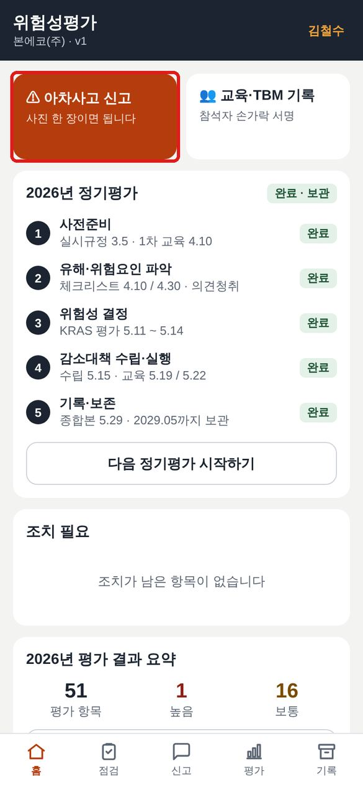
- 앱을 열면 첫 화면 왼쪽 위 주황색 「⚠ 아차사고 신고」 버튼을 누릅니다.
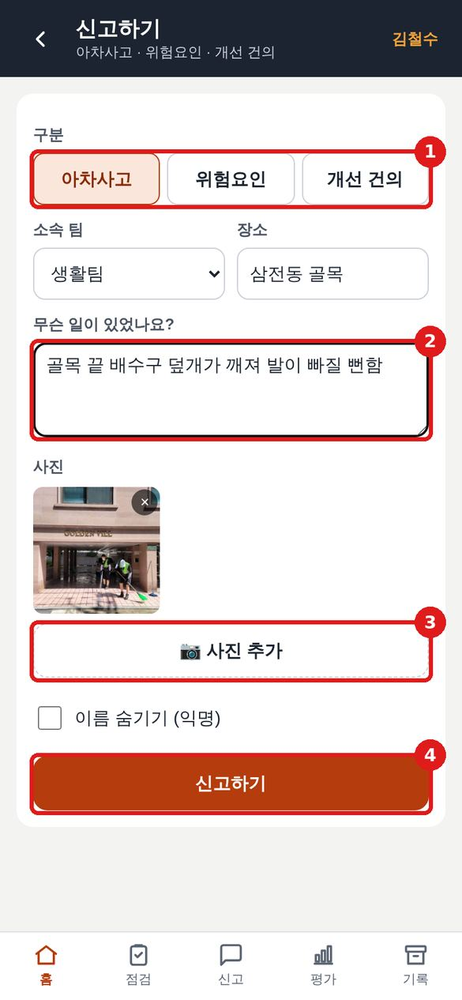
- 1 구분을 고릅니다.
· 아차사고: 다칠 뻔한 일
· 위험요인: 위험한 장소·장비
· 개선 건의: 바꿨으면 하는 것 - 소속 팀과 장소를 고르거나 적습니다.
- 2 무슨 일이었는지 한두 줄 적습니다. 짧아도 됩니다.
- 3 📷 사진 추가로 현장 사진을 찍어 붙입니다.
- 이름을 숨기고 싶으면 이름 숨기기에 체크합니다.
- 4 신고하기를 누르면 끝입니다.
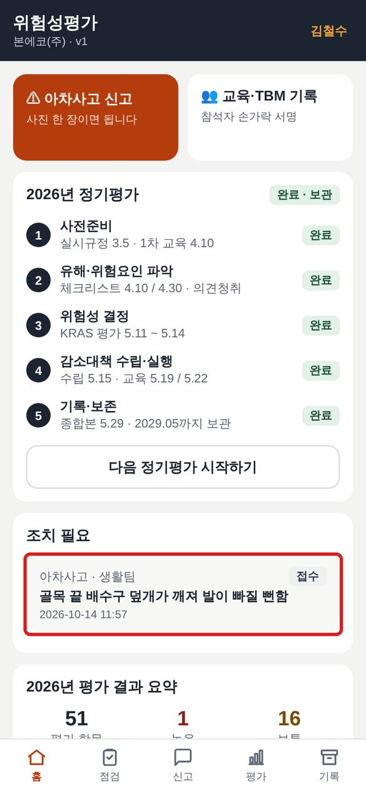
접수되면 첫 화면 「조치 필요」에 올라갑니다. 관리자가 확인해서 처리 결과를 남깁니다.
신고는 벌점이 아니라 사고를 막는 기록입니다. 작은 것도 올려 주세요.
② 교육·TBM 때 서명하기
현장 근무자 · 관리자가 휴대폰을 건네주면
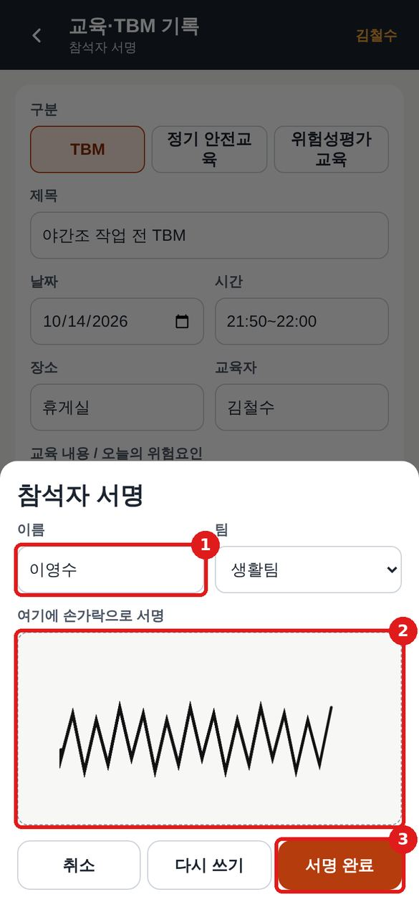
- 1 본인 이름을 적고 팀을 고릅니다.
- 2 네모 칸 안에 손가락으로 서명합니다. 잘못 쓰면 다시 쓰기.
- 3 서명 완료를 누르고 다음 사람에게 넘깁니다.
관리자용
③ 신고 처리하기
관리자 · 아래 「신고」 메뉴
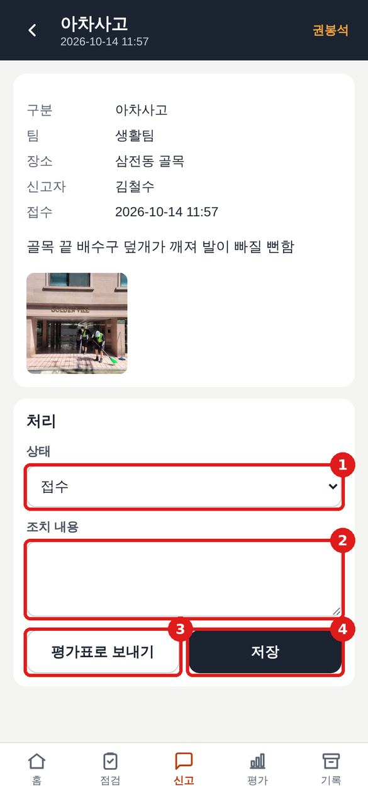
- 아래 메뉴 신고 → 목록에서 신고를 누릅니다.
- 1 상태를 바꿉니다: 접수 → 검토중 → 평가 반영 → 조치완료
- 2 한 일을 적습니다. (예: 배수구 덮개 구청 교체 요청)
- 3 위험성 평가가 필요한 건이면 평가표로 보내기 — 내용과 사진이 채워진 수시평가 화면이 열립니다.
- 4 저장. 누가 언제 바꿨는지 처리 이력에 남습니다.
아차사고가 확인되면 위험성평가(수시평가)를 하도록 지침에 정해져 있습니다. 「평가표로 보내기」를 쓰면 그 기록이 자동으로 남습니다.
④ 현장 체크리스트 점검
관리자 · 아래 「점검」 메뉴 · 26년 체크리스트 6종 그대로
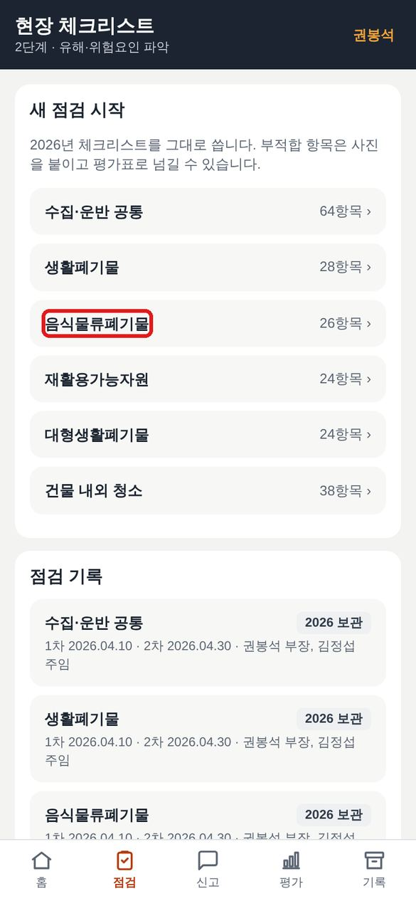
- 아래 메뉴 점검 → 점검할 공정(예: 음식물류폐기물)을 누릅니다.
- 아래쪽 「점검 기록」에서 지난 점검과 26년 보관본을 볼 수 있습니다.
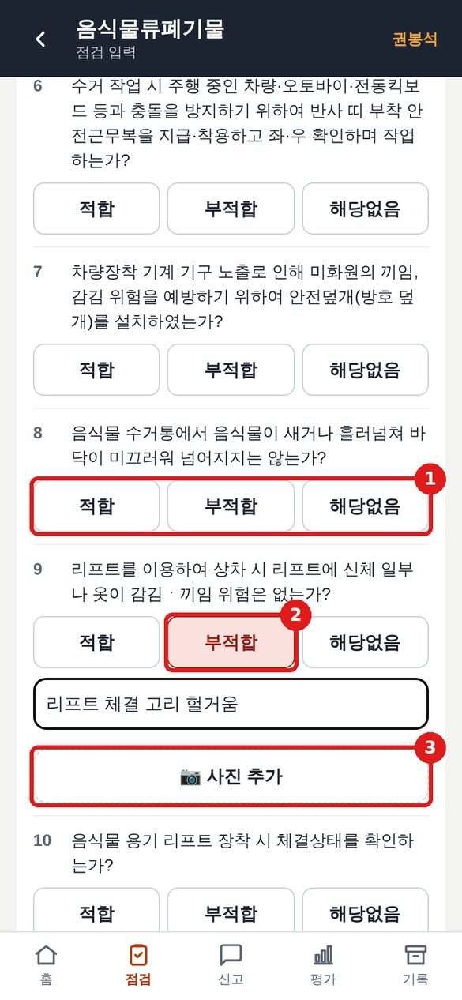
- 1 항목마다 적합 / 부적합 / 해당없음을 누릅니다.
- 2 부적합을 누르면 내용 칸이 열립니다. 무엇이 문제인지 적고
- 3 사진을 붙입니다.
- 다 보면 맨 아래 남은 항목 모두 적합 → 점검 저장.
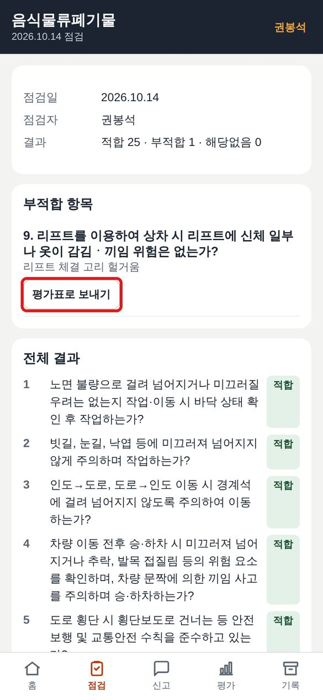
저장하면 결과표가 나옵니다. 부적합 항목은 평가표로 보내기로 바로 위험성평가 항목을 만들 수 있습니다. 맨 아래 인쇄 / PDF로 종이 점검표도 뽑을 수 있습니다.
⑤ 교육·TBM 기록 남기기
관리자 · 첫 화면 「교육·TBM 기록」 또는 「기록」 메뉴
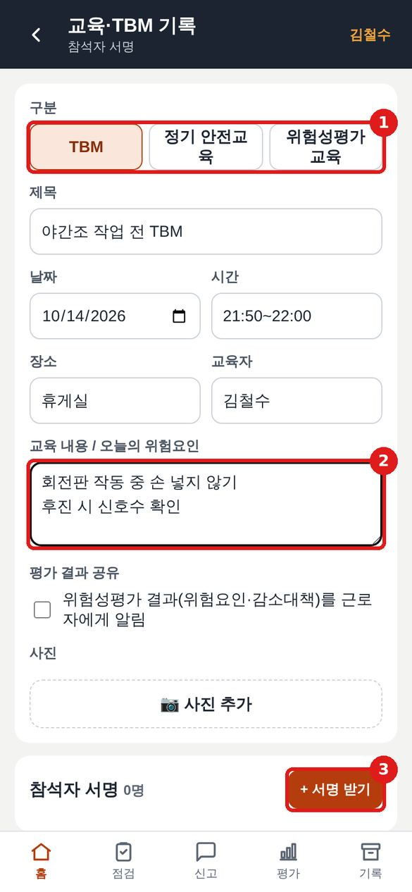
- 1 구분을 고릅니다: TBM / 정기 안전교육 / 위험성평가 교육
- 제목, 날짜, 시간, 장소를 적습니다.
- 2 교육 내용이나 오늘의 위험요인을 한 줄에 하나씩 적습니다.
- 평가 결과를 알려 준 교육이면 평가 결과 공유에 체크합니다. 결과 공유 의무의 근거가 됩니다.
- 교육 사진을 붙입니다.
- 3 + 서명 받기를 눌러 휴대폰을 돌리며 한 명씩 서명받습니다. (② 참고)
- 맨 아래 저장.
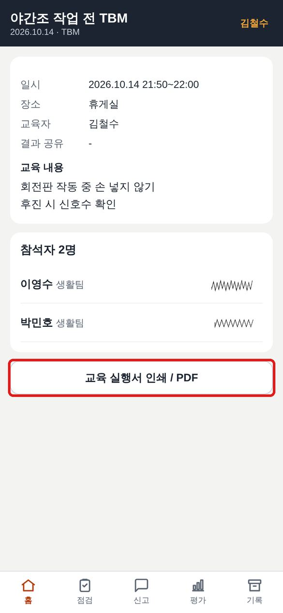
저장된 기록에서 교육 실행서 인쇄 / PDF를 누르면 교육 실행서가 사진과 서명까지 넣어 한 장으로 나옵니다. 종합본에 그대로 넣으면 됩니다.
⑥ 평가표 보기 · 수시평가 · 인쇄
관리자 · 아래 「평가」 메뉴
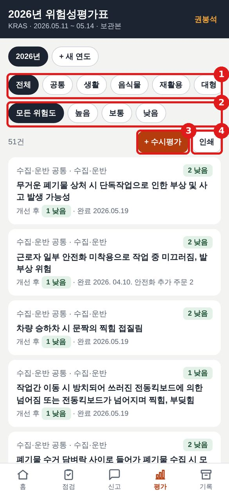
- 1 공정별(공통·생활·음식물·재활용·대형·건물·수시)로 걸러 봅니다.
- 2 위험도(높음·보통·낮음)로 걸러 봅니다.
- 3 + 수시평가: 사고·작업 변경·새 장비가 생기면 항목을 추가합니다.
- 4 인쇄: KRAS 표준 양식(A4 가로)으로 출력됩니다. PDF로 저장하려면 인쇄 창에서 프린터를 「PDF로 저장」으로 고르세요.
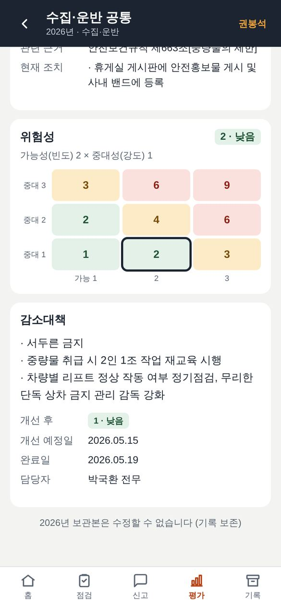
항목을 누르면 위험성(가능성×중대성), 감소대책, 예정일·완료일, 담당자, 수정 이력이 나옵니다.
2026년 보관본은 기록 보존을 위해 수정할 수 없게 잠가 두었습니다.
⑦ 다음 해 정기평가 시작하기
관리자 · 1년에 한 번 (예: 2027년 3월)
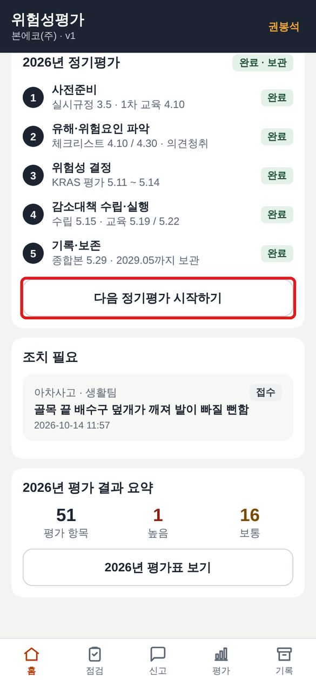
- 첫 화면에서 다음 정기평가 시작하기를 누릅니다.
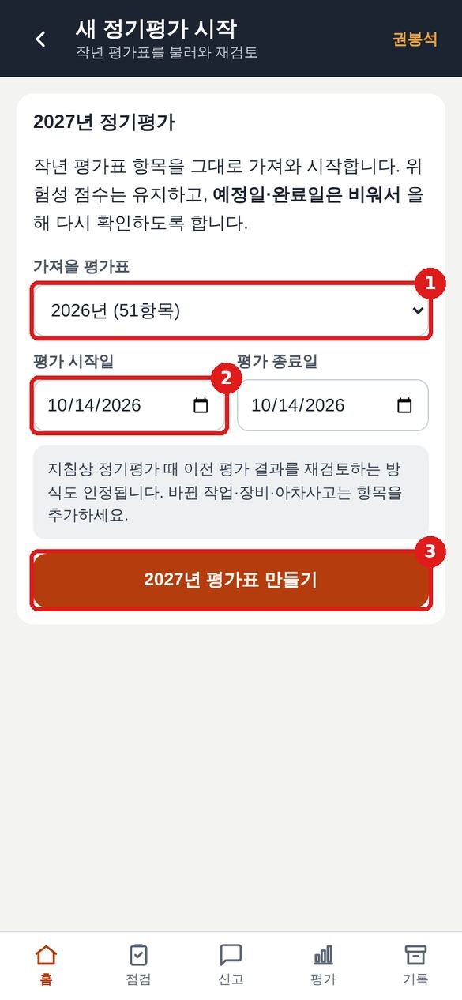
- 1 가져올 평가표: 작년 평가표를 고릅니다. 51개 항목이 그대로 들어옵니다.
- 2 평가 시작일·종료일을 넣습니다. (26년은 5.11~5.14)
- 3 평가표 만들기.
점수는 그대로 두고 예정일·완료일만 비워서 들어옵니다. 올해 다시 확인하라는 뜻입니다.
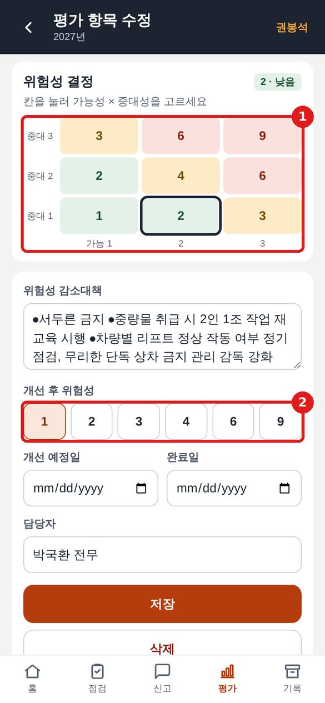
- 항목을 하나씩 열어 수정을 누릅니다.
- 1 올해 상황에 맞게 표의 칸을 눌러 위험성을 고릅니다. (세로 = 중대성, 가로 = 가능성)
- 2 감소대책을 고치고 개선 후 위험성을 고릅니다.
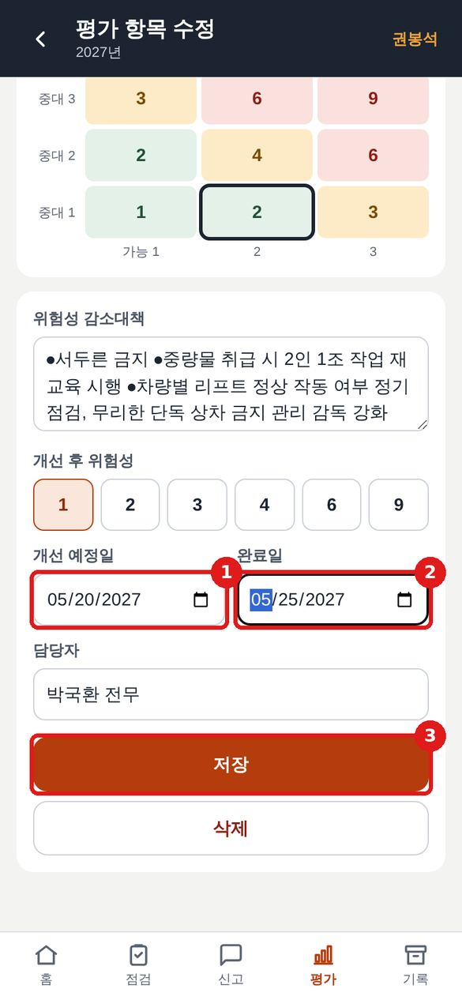
- 1 개선 예정일, 2 완료일을 넣고 3 저장.
완료일이 평가일보다 앞서면 빨간 경고가 뜨고 저장되지 않습니다. 26년 서류처럼 날짜가 거꾸로 되는 일을 막아 줍니다. 고친 내용은 「수정 이력」에 자동으로 남습니다.
⑧ 기록 보관 · 출력
관리자 · 아래 「기록」 메뉴 · 법정 보관 3년
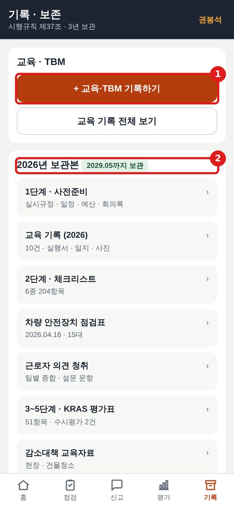
- 1 교육·TBM 기록하기 / 전체 보기
- 2 2026년 보관본: 사전준비(실시규정·일정·예산·회의록), 교육 기록 10건, 체크리스트, 차량 안전장치 점검표, 근로자 의견 청취, KRAS 평가표, 감소대책 교육자료, 조직도·비상연락, 사진 41장
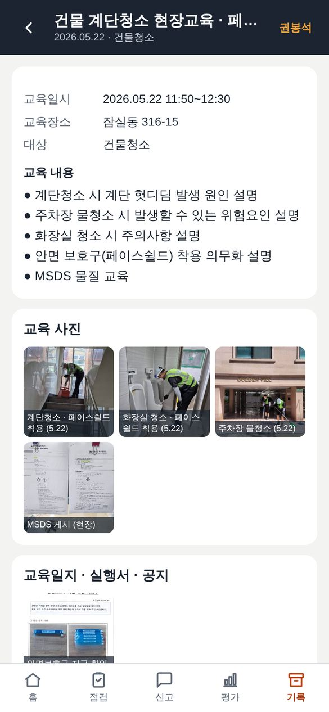
교육 기록을 누르면 그날 사진과 교육일지 스캔이 함께 나옵니다. 사진을 누르면 크게 보이고 ◀ ▶로 넘깁니다.
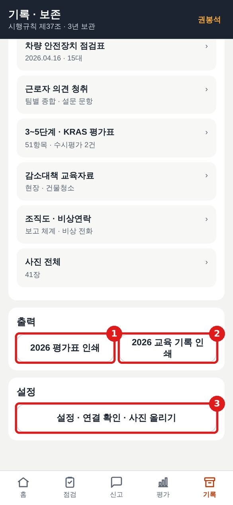
- 1 2026 평가표 인쇄 · 2 2026 교육 기록 인쇄
- 3 설정: 서버 연결 확인, 사진 개수 확인, 최근 활동(누가 언제 무엇을 했는지)
1년 흐름 — 언제 무엇을 하나
26년 일정표 기준
| 3월 | 실시규정 확인 · 일정표 작성 · 체크리스트 준비 → 앱: ⑦ 다음 해 정기평가 시작 |
|---|---|
| 4월 | 1차 교육(위험성평가 교육) · 현장 점검 1차·2차 · 근로자 의견 청취 → 앱: ⑤ 교육 기록, ④ 체크리스트, ① 신고로 의견 받기 |
| 5월 | 위험성 결정(평가) · 감소대책 수립 · 사후 교육 → 앱: ⑥ 평가표 수정, ⑤ 교육 기록(결과 공유 체크) |
| 5월 말 | 종합본 정리 → 앱: ⑧ 인쇄 / PDF |
| 연중 | 매일 TBM 서명 · 아차사고 신고 → 처리 → 필요하면 수시평가 (①②③⑥) |
| 보관 | 기록은 3년 보관 (2026년분 → 2029년 5월까지) |
이럴 땐 이렇게
사진이 「사진 미등록」으로 나와요 기록 → 설정 → 「연결 확인」에서 2026 사진이 41 / 41장인지 보세요. 숫자가 모자라면 사진 올리기를 다시 하세요. 저장 실패라고 나와요 인터넷 연결을 확인하고 다시 누르세요. 입력한 내용은 화면에 그대로 남아 있습니다. 잘못 저장했어요 평가 항목은 「수정」으로 고치면 됩니다. 고친 기록은 이력으로 남습니다. 신고는 관리자가 상태와 조치 내용을 바꿀 수 있습니다. 이름이 다른 사람으로 나와요 화면 오른쪽 위 주황색 이름을 눌러 바꾸세요. 같이 쓰는 휴대폰이면 서명할 때마다 이름을 확인하세요. 앱이 예전 화면 그대로예요 앱을 완전히 닫았다가 다시 열거나, 크롬에서 새로고침하세요. 지금 버전은 설정 맨 아래에 나옵니다.본에코(주) 위험성평가 앱 · 사용 방법 v2